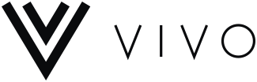
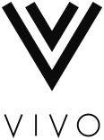
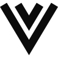
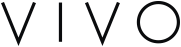
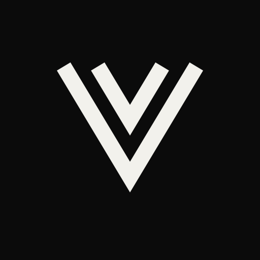

Horizontaal
De hoofdversie. Navigatie, e-mail, facturen, documenten.


Het logo van ViVo bestaat uit het beeldmerk (twee in elkaar liggende chevrons, voor de twee V's in ViVo) en het woordmerk VIVO in een fijne, ruim gespatieerde lijn. Alle bestanden zijn SVG: scherp op elk formaat.
De hoofdversie. Navigatie, e-mail, facturen, documenten.


Voor vierkante of staande vlakken: social, visitekaartje, sticker.
Los, vanaf 33 px. Avatar, watermerk, groot formaat.

Speciaal voor 16–32 px: dikkere lijn en meer lucht. Favicon en heel kleine plekken.
vivo-beeldmerk-klein-zwart.svg · vivo-beeldmerk-klein-wit.svg


VIVO los, als tekstelement op de site of in een hero. Vanaf 14 px hoog.
Houd rondom het logo minstens x vrij, waarbij x de hoogte van het woordmerk VIVO is. Bij het losse beeldmerk: de helft van zijn hoogte.
Het logo is altijd eenkleurig. Dit zijn de voorlopige waarden; de definitieve kleuren volgen met de huisstijl (fase 3).
Zwart #0b0b0b
Wit #f2f1ec

favicon.svg wisselt vanzelf tussen deze twee, mee met een licht of donker tabblad. Het app-icoon is een vol vierkant; iOS en Android ronden de hoeken zelf af. PNG-versies (180, 192 en 512 px) volgen bij de bouw van de site.
<link rel="icon" href="/favicon.svg" type="image/svg+xml">